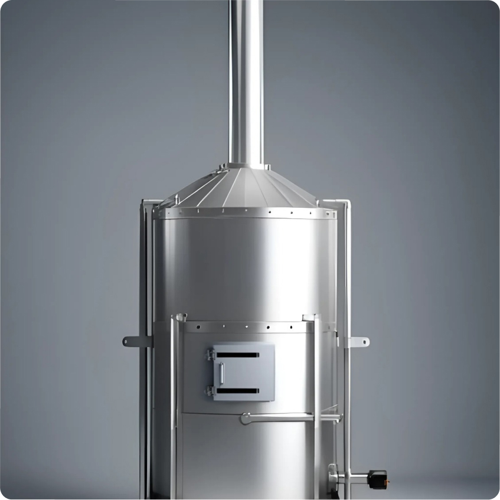

Home
About Us
Product
Contact
Home
About Us
Product
Contact

MTPS V8K
Skala Desa
Mesin Thermal Pemusnah Sampah
Rp. 200,000,000
Tidak menggunakan bahan bakar minyak atau gas
Dapt meminimalisir panas pada ruang bakar
Asap Sudah melalui proses pencucian (Srubber).
Mudah dalam pengoperasian.
Kapasitas 8 Mater Kubik
Pesan Sekarang
SPESIFIKASI
KP. Kebon Desa Bojonegara, Kecamatan
Tambakdahan, Kabupaten Subang,
Provinsi Jawa Barat.
abastatech@gmail.com
 abastatech@gmail.com
abastatech@gmail.com